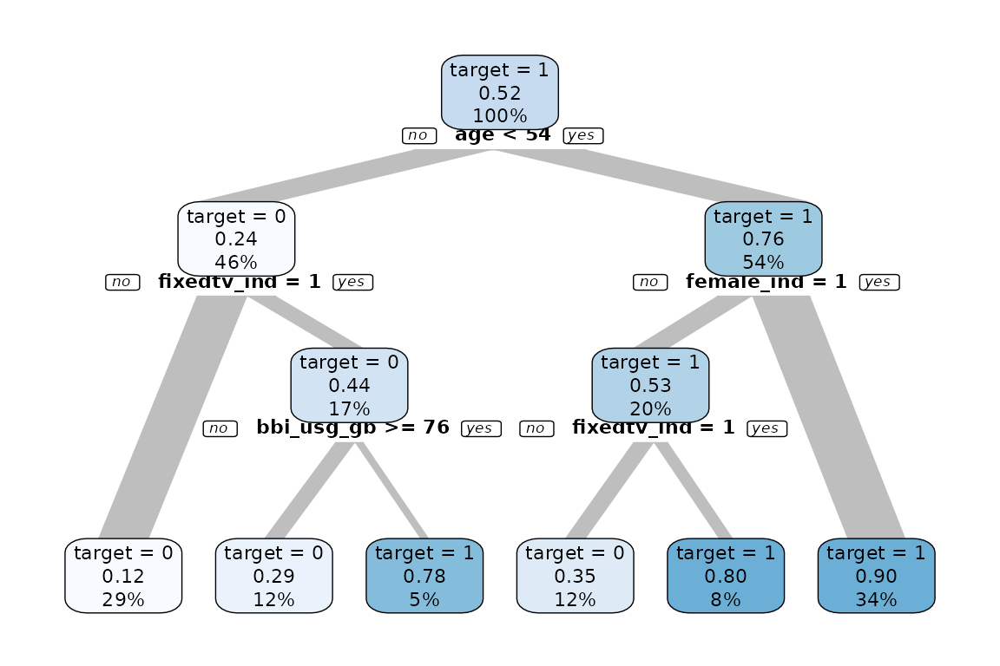

The explore package offers a simplified way to use machine learning and make a prediction.
-
explain_tree()creates a decision tree -
explain_forest()creates a random forest -
explain_xgboost()creates a xgboost model -
explain_logreg()creates a logistic regression -
predict_target()uses a model to make a prediction
We use synthetic data in this example
library(dplyr)
library(explore)
train <- create_data_buy(obs = 1000, seed = 1)
glimpse(train)
#> Rows: 1,000
#> Columns: 13
#> $ period <int> 202012, 202012, 202012, 202012, 202012, 202012, 202012…
#> $ buy <int> 1, 1, 0, 0, 1, 0, 0, 0, 0, 1, 1, 1, 0, 1, 0, 1, 0, 0, …
#> $ age <int> 46, 42, 69, 51, 55, 58, 69, 73, 59, 34, 20, 36, 48, 45…
#> $ city_ind <int> 1, 1, 1, 0, 1, 0, 0, 0, 0, 0, 0, 1, 1, 1, 0, 1, 1, 1, …
#> $ female_ind <int> 1, 1, 1, 0, 1, 0, 0, 0, 0, 0, 1, 0, 0, 1, 1, 1, 1, 1, …
#> $ fixedvoice_ind <int> 0, 0, 0, 0, 0, 0, 0, 0, 0, 0, 0, 0, 0, 0, 0, 0, 0, 0, …
#> $ fixeddata_ind <int> 1, 1, 1, 1, 1, 1, 1, 1, 1, 1, 1, 1, 1, 1, 1, 1, 1, 1, …
#> $ fixedtv_ind <int> 1, 1, 0, 0, 0, 0, 0, 1, 0, 1, 0, 1, 0, 0, 1, 1, 0, 0, …
#> $ mobilevoice_ind <int> 0, 0, 1, 1, 1, 0, 1, 0, 0, 0, 1, 0, 0, 0, 1, 1, 1, 1, …
#> $ mobiledata_prd <chr> "NO", "NO", "BUSINESS", "BUSINESS", "BUSINESS", "NO", …
#> $ bbi_speed_ind <int> 1, 0, 0, 1, 1, 1, 0, 0, 1, 0, 1, 1, 0, 1, 1, 1, 1, 1, …
#> $ bbi_usg_gb <int> 93, 66, 72, 48, 81, 65, 48, 42, 40, 63, 64, 72, 69, 84…
#> $ hh_single <int> 0, 0, 1, 1, 1, 0, 0, 0, 0, 1, 0, 0, 0, 0, 0, 0, 0, 0, …Train model
First we create a decision tree model, using buy as
target (buy contains only 0 and 1 values)
train %>% explain_tree(target = buy)
We see some clear patterns. Now we create a random forest model (as
it is more accurate). To get the model itself, use parameter
out = "model"
model <- train %>% explain_forest(target = buy, out = "model")Predict
Now we create test data and use the model for a prediction. We use a different seed so we get different data.
test <- create_data_buy(obs = 1000, seed = 2)
glimpse(test)
#> Rows: 1,000
#> Columns: 13
#> $ period <int> 202012, 202012, 202012, 202012, 202012, 202012, 202012…
#> $ buy <int> 1, 0, 0, 1, 0, 0, 1, 0, 1, 0, 0, 1, 0, 1, 1, 0, 0, 1, …
#> $ age <int> 40, 61, 76, 39, 59, 47, 37, 65, 34, 64, 53, 46, 56, 67…
#> $ city_ind <int> 1, 0, 0, 0, 0, 1, 1, 0, 1, 0, 0, 0, 1, 0, 0, 1, 1, 1, …
#> $ female_ind <int> 1, 1, 0, 1, 0, 0, 1, 0, 1, 0, 0, 0, 0, 1, 0, 1, 0, 1, …
#> $ fixedvoice_ind <int> 0, 0, 1, 0, 0, 0, 0, 0, 0, 0, 0, 0, 0, 0, 0, 0, 1, 0, …
#> $ fixeddata_ind <int> 1, 1, 1, 1, 1, 1, 1, 1, 1, 1, 1, 1, 1, 1, 1, 1, 1, 1, …
#> $ fixedtv_ind <int> 0, 0, 0, 1, 0, 0, 1, 0, 1, 0, 0, 1, 0, 1, 1, 0, 0, 0, …
#> $ mobilevoice_ind <int> 1, 0, 1, 0, 1, 0, 1, 1, 1, 1, 1, 0, 0, 0, 0, 1, 0, 0, …
#> $ mobiledata_prd <chr> "BUSINESS", "MOBILE STICK", "NO", "MOBILE STICK", "NO"…
#> $ bbi_speed_ind <int> 1, 0, 0, 1, 1, 1, 1, 0, 1, 0, 1, 1, 1, 0, 1, 1, 0, 1, …
#> $ bbi_usg_gb <int> 77, 68, 8, 63, 49, 75, 66, 45, 82, 55, 45, 53, 49, 53,…
#> $ hh_single <int> 0, 1, 0, 0, 1, 1, 0, 0, 1, 0, 0, 1, 0, 1, 0, 0, 0, 1, …
test <- test %>% predict_target(model = model)
glimpse(test)
#> Rows: 1,000
#> Columns: 15
#> $ period <int> 202012, 202012, 202012, 202012, 202012, 202012, 202012…
#> $ buy <int> 1, 0, 0, 1, 0, 0, 1, 0, 1, 0, 0, 1, 0, 1, 1, 0, 0, 1, …
#> $ age <int> 40, 61, 76, 39, 59, 47, 37, 65, 34, 64, 53, 46, 56, 67…
#> $ city_ind <int> 1, 0, 0, 0, 0, 1, 1, 0, 1, 0, 0, 0, 1, 0, 0, 1, 1, 1, …
#> $ female_ind <int> 1, 1, 0, 1, 0, 0, 1, 0, 1, 0, 0, 0, 0, 1, 0, 1, 0, 1, …
#> $ fixedvoice_ind <int> 0, 0, 1, 0, 0, 0, 0, 0, 0, 0, 0, 0, 0, 0, 0, 0, 1, 0, …
#> $ fixeddata_ind <int> 1, 1, 1, 1, 1, 1, 1, 1, 1, 1, 1, 1, 1, 1, 1, 1, 1, 1, …
#> $ fixedtv_ind <int> 0, 0, 0, 1, 0, 0, 1, 0, 1, 0, 0, 1, 0, 1, 1, 0, 0, 0, …
#> $ mobilevoice_ind <int> 1, 0, 1, 0, 1, 0, 1, 1, 1, 1, 1, 0, 0, 0, 0, 1, 0, 0, …
#> $ mobiledata_prd <chr> "BUSINESS", "MOBILE STICK", "NO", "MOBILE STICK", "NO"…
#> $ bbi_speed_ind <int> 1, 0, 0, 1, 1, 1, 1, 0, 1, 0, 1, 1, 1, 0, 1, 1, 0, 1, …
#> $ bbi_usg_gb <int> 77, 68, 8, 63, 49, 75, 66, 45, 82, 55, 45, 53, 49, 53,…
#> $ hh_single <int> 0, 1, 0, 0, 1, 1, 0, 0, 1, 0, 0, 1, 0, 1, 0, 0, 0, 1, …
#> $ prediction_0 <dbl> 0.06, 0.40, 1.00, 0.00, 0.74, 0.40, 0.04, 1.00, 0.00, …
#> $ prediction_1 <dbl> 0.94, 0.60, 0.00, 1.00, 0.26, 0.60, 0.96, 0.00, 1.00, …Now we got 2 new variables prediction_0 (the probability
of buy == 0) and prediction_1 (the probability
of buy == 1). We can check the predictions by comparing
prediction_1 with real values of buy.

There is a clear difference between buy == 0 and
buy == 1. So the prediction works.